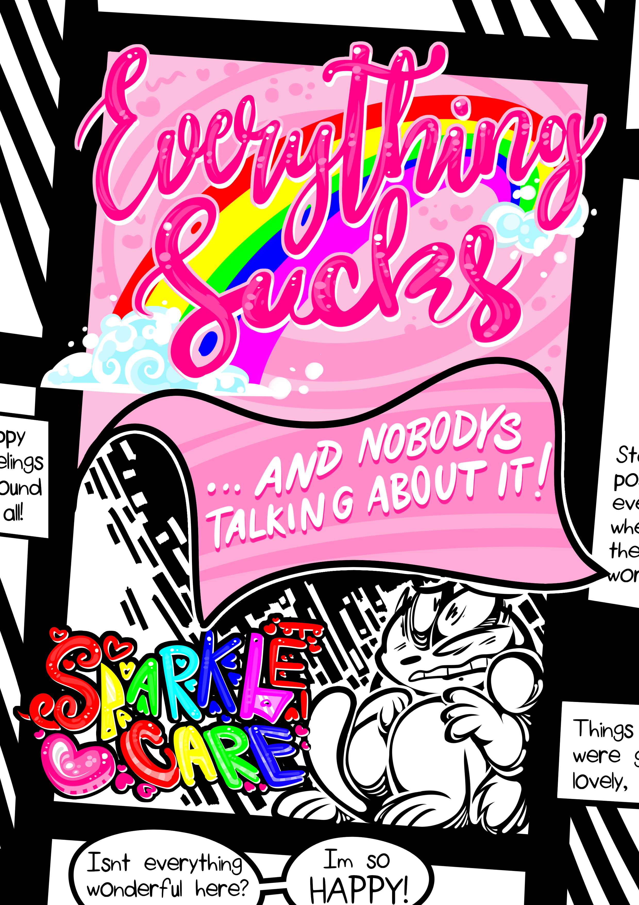

Funny blue panda idk (Kh4ng)

Bệnh viện Chợ rẫy nhưng evil hơn
Thông tin cơ bản
Sparklecare là một bộ truyện kể về một bệnh viện màu sắc cùng tên nhưng sau lớp mặt nạ nó là địa ngục trần gian nơi mà bệnh nhân bị tra tấn và giết hại dã man, câu truyện theo chân nhân vật chính Barry Ill vô tình nhập viện vì nghĩ rằng bệnh viện đó là nơi tốt nhất cho việc điều trị tình trạng sức khoẻ của cậu ấy, mặc kệ lời cảnh báo của một ông già kỳ lạ, cậu sau đó gặp được Uni Cornelius, bạn cùng phòng của cậu ấy, và những người bạn khác - Caroline Coughs, Hemera Philly, và Jay Fortune- và hành trình nhóm bạn trốn thoát nhằm tiết lộ cho cả thế giới biết về chân tướng của bệnh việnSparklecare được dựa trên trải nghiệm của tác giả Kittycorn S. Comet trong bệnh viện và toàn bộ câu truyện như là cách để tác giả an ủi bản thân và hồi phục sau những tổn thương trong quá khứ...
Các Volume Truyện

Everything Sucks VOL 1 - Hoàn thành 146/146 Trang